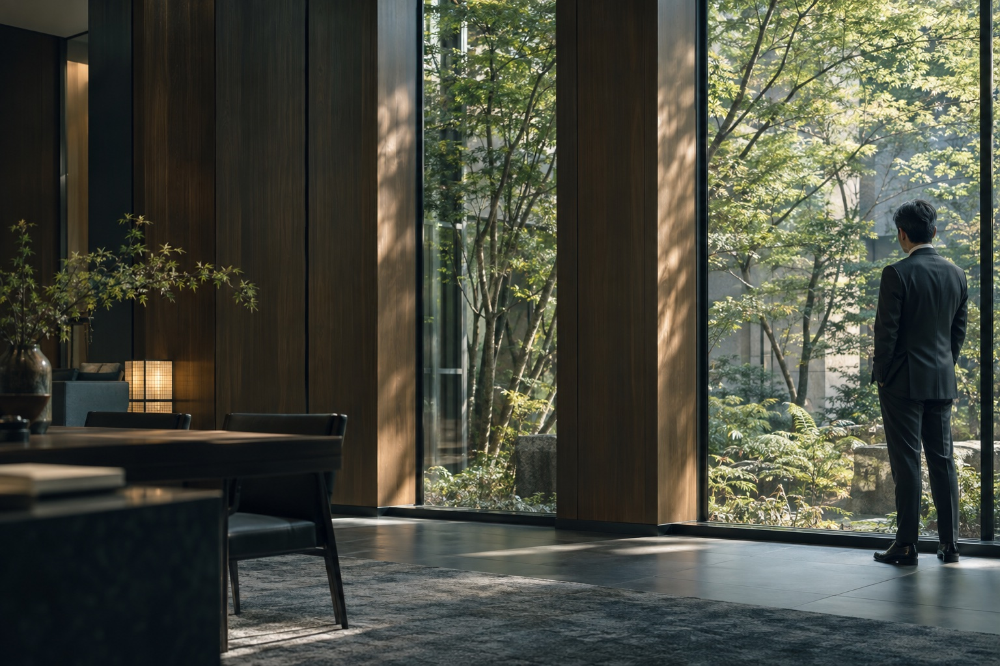

あなたの声から、はじまる。
その先の、
穏やかな日々へ。
A quiet strength.
A clearer tomorrow.
答えを急ぐ前に、
あなたの想いを聴く。
悩みのかたちは、一人ひとり違います。同じように見える出来事にも、その人だけの背景と、大切にしてきた想いがあります。
私たちは、まず、あなたの言葉に耳を傾けることから始めます。いま何が起きているのか。これから、どう歩んでいきたいのか。一つひとつをともに整理し、進む道を考えます。
波が静まり、穏やかな水面が広がる「凪」のように。あなたが自分らしい明日を迎えるための、静かな支えでありたいと考えています。
OUR APPROACH
向き合うことから、
道はひらける。
すぐに答えが見つからなくても、大丈夫。
いまの気持ちを出発点に、これからの選択肢を
一緒に見つけていきます。
Listen
まずは、聴く。
うまく話そうとしなくても構いません。出来事だけでなく、不安や大切にしたいことにも、静かに耳を傾けます。
Understand
一緒に、ほどく。
複雑に重なった事情を、一つずつ整理する。何が気がかりで、何から考えればよいのか、見通しを共有します。
Move forward
その先を、選ぶ。
大切なのは、あなたが納得できること。これからの暮らしや仕事にも目を向け、自分らしい一歩をともに考えます。
A quiet strength, by your side.
PEOPLE & STORIES
人と、仕事と、
その先と。
一人ひとりの、その先へ。
弁護士に届くご相談の前には、その人が歩んできた時間があります。大切に育てた仕事、家族との日々、まだ言葉にならないこれからのこと。
法律の向こう側にある想いにも目を向けながら、ともに考える。そんな私たちの姿勢を、二つの物語でお伝えします。
人物・物語は架空の設定です。実際の相談事例・解決実績ではありません。
Journal
凪の便り
NAGI NOTES
思いを綴る
日々の向こうに、見つめるもの
Contact